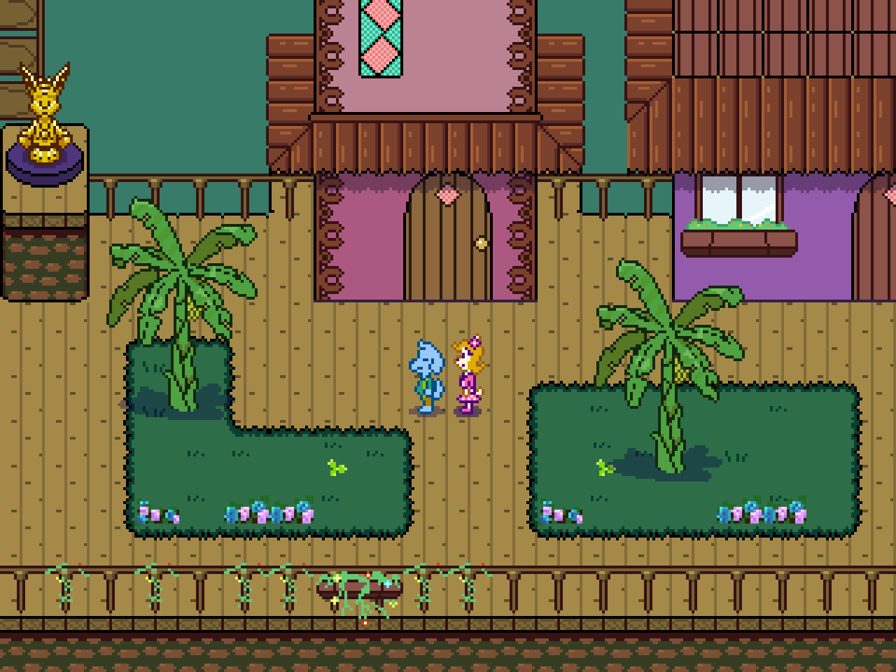
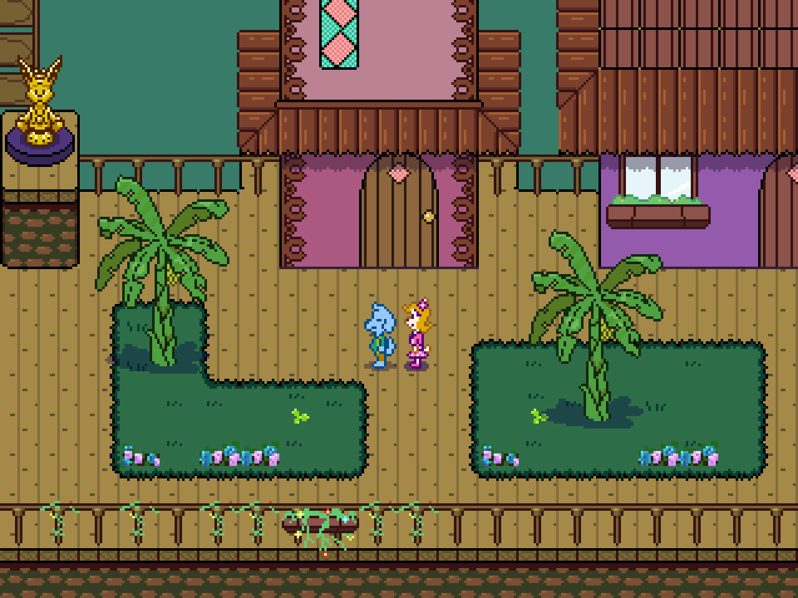

Something’s hiding
Wander off the beaten path to find secret rooms, strange artifacts, and stories that others missed.
Explore a dance club, rob a dinosaur, crash a wedding — just your average turn-based RPG.
Wander off the beaten path to find secret rooms, strange artifacts, and stories that others missed.
No EXP. No grinding. Just strange items and a few clever tricks between you and total disaster.
Conversations might unlock items, backstories, or your desire to uninstall the game... It’s part of the charm.
They laugh, cry, fight strange foes, and cling to each other when the world forgets to be kind.